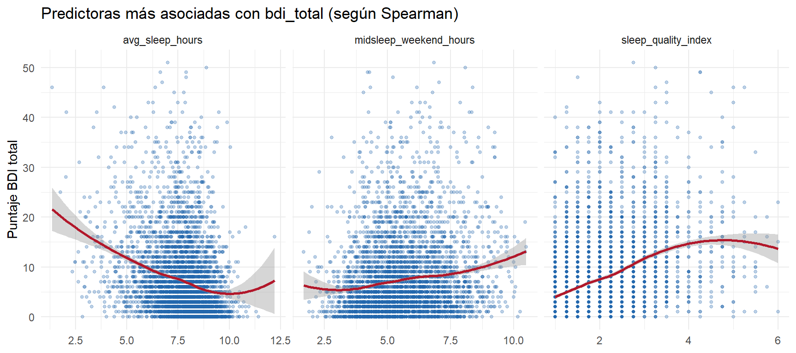

Chapter 5 6. Análisis descriptivo bivariado
5.0.1 6.1 Matriz de correlación (Spearman)
predictoras <- c("screen_time_index", "est_leisure_screen_hours",
"sleep_quality_index", "avg_sleep_hours",
"midsleep_weekend_hours", "social_jetlag_hours")
datos_num <- datoshealth %>% select(all_of(predictoras), bdi_total)
mat_cor <- cor(datos_num, use = "complete.obs", method = "spearman")
ggcorrplot(
mat_cor,
type = "lower",
lab = TRUE,
lab_size = 3,
colors = c(col_secundario, "white", col_principal),
title = "Matriz de correlación de Spearman"
) El análisis de correlación de Spearman revela dos asociaciones lineales de gran magnitud: una fuerte redundancia entre las métricas de uso de pantalla (screen_time_index y est_leisure_screen_hours, \(r = 0.95\)) y una relación directa entre el horario medio de sueño en fines de semana y el jetlag social (\(r = 0.84\)).En cuanto a la salud mental (bdi_total), esta presenta su correlación más significativa con la calidad del sueño (sleep_quality_index, \(r = 0.39\)) y una relación inversa con la duración promedio del sueño (avg_sleep_hours, \(r = -0.28\)). Estos hallazgos sugieren que el deterioro en la calidad y duración del descanso está asociado a mayores niveles de sintomatología depresiva en la muestra.
El análisis de correlación de Spearman revela dos asociaciones lineales de gran magnitud: una fuerte redundancia entre las métricas de uso de pantalla (screen_time_index y est_leisure_screen_hours, \(r = 0.95\)) y una relación directa entre el horario medio de sueño en fines de semana y el jetlag social (\(r = 0.84\)).En cuanto a la salud mental (bdi_total), esta presenta su correlación más significativa con la calidad del sueño (sleep_quality_index, \(r = 0.39\)) y una relación inversa con la duración promedio del sueño (avg_sleep_hours, \(r = -0.28\)). Estos hallazgos sugieren que el deterioro en la calidad y duración del descanso está asociado a mayores niveles de sintomatología depresiva en la muestra.
5.0.2 6.2 Selección de variables a partir de la correlación real
# correlación de cada predictora con la variable objetivo, ordenada
cor_con_bdi <- mat_cor[predictoras, "bdi_total"] %>%
sort(decreasing = TRUE) %>%
round(3)
datatable(
tibble(Variable = names(cor_con_bdi), Correlacion_con_bdi = cor_con_bdi),
options = list(dom = "t"),
caption = "Correlación de cada predictora con bdi_total (Spearman)"
)top3_predictoras <- names(cor_con_bdi)[order(-abs(cor_con_bdi))][1:3]
# pares de predictoras redundantes entre sí (|r| > 0.8): no deben usarse juntas en un modelo
mat_pred <- mat_cor[predictoras, predictoras]
mat_pred[upper.tri(mat_pred, diag = TRUE)] <- NA
pares_redundantes <- as.data.frame(as.table(mat_pred)) %>%
filter(!is.na(Freq), abs(Freq) > 0.8) %>%
rename(Variable_1 = Var1, Variable_2 = Var2, Correlacion = Freq)
datatable(pares_redundantes, options = list(dom = "t"), caption = "Pares de predictoras redundantes (|r| > 0.8)")El análisis de correlación expone dos pares de variables con un grado crítico de colinealidad: las métricas de pantalla (est_leisure_screen_hours y screen_time_index, \(r \approx 0.95\)) y los indicadores de sueño de fin de semana (social_jetlag_hours y midsleep_weekend_hours, \(r \approx 0.84\)).De cara a la construcción de un modelo predictivo para la variable objetivo bdi_total, la presencia de esta multicolinealidad atenta contra la estabilidad e interpretabilidad de los coeficientes de regresión. Por lo tanto, se concluye la necesidad de realizar una selección previa de variables (feature selection) eliminando un componente de cada par colineal antes del ajuste del modelo final.
5.0.3 6.3 Predictoras más asociadas con bdi_total
datoshealth %>%
select(all_of(top3_predictoras), bdi_total) %>%
pivot_longer(all_of(top3_predictoras), names_to = "Variable", values_to = "Valor") %>%
ggplot(aes(x = Valor, y = bdi_total)) +
geom_point(color = col_principal, alpha = 0.3, size = 1) +
geom_smooth(method = "loess", se = TRUE, color = col_secundario, linewidth = 1) +
facet_wrap(~Variable, scales = "free_x") +
theme_minimal() +
labs(title = "Predictoras más asociadas con bdi_total (según Spearman)",
x = NULL, y = "Puntaje BDI total")
El análisis de dispersión y tendencias suavizadas confirma que las tres variables presentan una relación clara con el nivel de depresión (bdi_total). La calidad del sueño (sleep_quality_index) muestra un impacto ascendente constante en el rango de 1 a 4 puntos, mientras que la duración habitual del sueño (avg_sleep_hours) evidencia un comportamiento inversamente proporcional, donde dormir menos de 7 horas se asocia con un incremento pronunciado en el BDI.Por su parte, la hora media de sueño los fines de semana (midsleep_weekend_hours) sugiere que los horarios de descanso muy tardíos se relacionan con mayor sintomatología. Vale destacar que los cambios de tendencia observados en los extremos superiores de las tres variables se acompañan de un ensanchamiento significativo en los intervalos de confianza, lo cual refleja una baja densidad de observaciones en esos rangos y no necesariamente una inversión en la tendencia real.
5.0.4 6.4 Interacción con sexo
colores_diagnostico <- c("0" = "#483d8b", "1" = "#5f9ea0")
tabla_sexo <- datoshealth %>%
count(sex, depressed) %>%
group_by(sex) %>%
mutate(
prop = n / sum(n),
label_text = paste0(percent(prop, accuracy = 0.1), "\n(", comma(n), ")")
) %>%
ungroup()
p1 <- ggplot(tabla_sexo, aes(x = sex, y = n, fill = factor(depressed))) +
geom_bar(stat = "identity", position = position_dodge(width = 0.85), width = 0.8) +
geom_text(
aes(label = label_text),
position = position_dodge(width = 0.85),
vjust = -0.3,
size = 3.5,
fontface = "bold",
color = "black"
) +
scale_fill_manual(
values = colores_diagnostico,
labels = c("No Deprimido (0)", "Deprimido (1)"),
name = "Diagnóstico"
) +
scale_y_continuous(expand = expansion(mult = c(0, 0.15))) +
theme_classic() +
labs(
title = "Prevalencia de Depresión por Género",
x = "Género",
y = "Cantidad de Adolescentes"
) +
theme(
plot.title = element_text(hjust = 0.5, face = "bold", size = 14),
axis.title = element_text(color = "#333333"),
legend.position = c(0.85, 0.85),
legend.background = element_blank()
)
medianas <- datoshealth %>%
group_by(sex) %>%
summarise(mediana = median(bdi_total, na.rm = TRUE))
colores_sexo <- c("Boy" = "#6a658d", "Girl" = "#5f9ea0")
p2 <- ggplot(datoshealth, aes(x = sex, y = bdi_total, fill = sex)) +
geom_boxplot(width = 0.4, outlier.size = 1, outlier.alpha = 0.6, color = "#333333") +
# Línea roja discontinua de Corte Clínico
geom_hline(yintercept = 14, color = "#e74c3c", linetype = "dashed", size = 0.8) +
# Cajas de texto con la Mediana
geom_label(
data = medianas,
aes(x = sex, y = mediana, label = paste0("Mediana: ", sprintf("%.1f", mediana))),
fill = "white",
color = "black",
fontface = "bold",
size = 3.2,
label.padding = unit(0.2, "lines"),
alpha = 0.85
) +
# Anotación manual para la leyenda de la línea de corte
annotate(
"text", x = 2.4, y = 50,
label = "--- Corte Clínico (BDI-II ≥ 14)",
color = "#e74c3c", size = 3.5, fontface = "plain"
) +
scale_fill_manual(values = colores_sexo) +
theme_classic() +
labs(
title = "Distribución del Puntaje BDI-II por Género",
x = "Género",
y = "Puntaje Total BDI-II (0-63)"
) +
theme(
plot.title = element_text(hjust = 0.5, face = "bold", size = 14),
legend.position = "none"
)
grid.arrange(p1, p2, ncol = 2) El análisis bivariado expone una brecha de género estadísticamente relevante en la salud mental de la muestra. En términos categóricos, las adolescentes presentan una prevalencia de depresión casi tres veces superior a la de sus pares masculinos (24.4% frente a 8.6%).Esta tendencia se ratifica al evaluar la variable en su escala continua: la mediana del puntaje BDI-II en chicas (7.0 puntos) duplica la de los chicos (3.0 puntos), mostrando una mayor dispersión hacia puntuaciones elevadas que sobrepasan el corte clínico (\(\ge 14\)). Estos resultados sugieren que el género es un factor determinante a considerar dentro del modelo predictivo para bdi_total.
El análisis bivariado expone una brecha de género estadísticamente relevante en la salud mental de la muestra. En términos categóricos, las adolescentes presentan una prevalencia de depresión casi tres veces superior a la de sus pares masculinos (24.4% frente a 8.6%).Esta tendencia se ratifica al evaluar la variable en su escala continua: la mediana del puntaje BDI-II en chicas (7.0 puntos) duplica la de los chicos (3.0 puntos), mostrando una mayor dispersión hacia puntuaciones elevadas que sobrepasan el corte clínico (\(\ge 14\)). Estos resultados sugieren que el género es un factor determinante a considerar dentro del modelo predictivo para bdi_total.